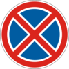
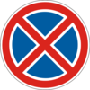

2. Обязанности и права водителей механических транспортных средств
- а) удостоверение водителя на право управления транспортным средством соответствующей категории;
- б) регистрационный документ на транспортное средство (для транспортных средств Вооруженных Сил, Национальной гвардии, Госпогранслужбы, Госспецтрансслужбы, Госспецсвязи, Оперативно-спасательной службы гражданской защиты – технический талон);
- в) в случае установки на транспортных средствах проблесковых маячков и(или) специальных звуковых сигнальных устройств разрешение, выданное Госавтоинспекцией МВД;
- г) на маршрутных транспортных средствах – схему маршрута и расписание движения; на тяжеловесных и крупногабаритных транспортных средствах и транспортных средствах, которые осуществляют дорожные перевозки опасных грузов, – документацию в соответствии с требованиями специальных правил;
- ґ) полис (сертификат) обязательного страхования гражданско-правовой ответственности владельцев наземных транспортных средств. Водители, которые в соответствии с законодательством освобождаются от обязательного страхования гражданско-правовой ответственности владельцев наземных транспортных средств на территории Украины, должны иметь при себе соответствующие подтверждающие документы (удостоверение).
Владелец транспортного средства может передавать такое средство в пользование другому лицу, имеющему удостоверение водителя на право управления транспортным средством соответствующей категории, передав ему регистрационный документ на это транспортное средство.
- а) перед выездом проверить и обеспечить технически исправное состояние и комплектность транспортного средства, правильность размещения и крепления груза;
- б) быть внимательным, следить за дорожной обстановкой, соответственно реагировать на ее изменение, следить за правильностью размещения и крепления груза, техническим состоянием транспортного средства и не отвлекаться от управления этим средством в дороге;
- в) на автомобилях, оборудованных средствами пассивной безопасности (подголовники, ремни безопасности), пользоваться ими и не перевозить пассажиров, не пристегнутых ремнями безопасности. Разрешается не пристегиваться лицу, обучающему вождению, если за рулем ученик, а в населенных пунктах, кроме этого, водителям-инвалидам, водителям и пассажирам оперативных и специальных транспортных средств и такси;
- г) во время движения на мотоцикле и мопеде быть застегнутом мотошлеме и не перевозить пассажиров без застегнутых мотошлемов;
- ґ) не загрязнять проезжую часть и полосу отвода автомобильных дорог;
- д) не создавать своими действиями угрозы безопасности дорожного движения;
- е) сообщать дорожно-эксплуатационным организациям или Госавтоинспекции о выявленных фактах создания препятствий для дорожного движения;
- є) не совершать действий, в результате которых могут быть повреждены автомобильные дороги и их элементы, а также нанесен ущерб пользователям.
- а) предъявить для проверки документы, указанные в пункте 2.1;
- б) дать возможность проверить номера агрегатов и комплектность транспортного средства;
- в) дать возможность осмотреть транспортное средство в соответствии с законодательством при наличии на то законных оснований, в том числе провести с использованием специальных устройств (приборов) проверку технического состояния транспортных средств, которые в соответствии с законодательством подлежат обязательному техническому контролю.
- а) передать для проверки документы, указанные в по пунктах «а», «б» и «г» пункта 2.1 данных Правил;
- б) предоставить транспортное средство и прицеп (при наличии) для весового и/или габаритного контроля в соответствии с установленной процедурой.
- а) работникам милиции и здравоохранения для доставки в ближайшее лечебное заведение лиц, нуждающихся в неотложной медицинской помощи;
- б) работникам милиции для выполнения непредвиденных и неотложных служебных обязанностей, связанных с преследованием правонарушителей, доставкой их в милицию, и для транспортирования поврежденных транспортных средств.
- 1. Для транспортировки поврежденных транспортных средств привлекаются только грузовые автомобили.
- 2. Лицо, которое воспользовалось транспортным средством, должно выдать справку с указанием пройденного расстояния, продолжительности поездки, своей фамилии, должности, номера удостоверения, полного наименования своего подразделения или организации.
Примечания:
 «Инвалид»,
может отступать от требований дорожных знаков
3.1,
«Инвалид»,
может отступать от требований дорожных знаков
3.1,
 3.2
и
3.2
и

 3.35-3.38,
а также знака

3.34
при наличии под ним таблички
3.35-3.38,
а также знака

3.34
при наличии под ним таблички
 7.18
(см. приложение 1).
7.18
(см. приложение 1).
- а) управлять транспортным средством в состоянии алкогольного опьянения или под воздействием наркотических или токсических веществ;
- б) управлять транспортным средством в болезненном состоянии, в состоянии утомления, а также находясь под воздействием лекарственных препаратов, снижающих скорость реакции и внимание;
-
в)
управлять транспортным средством, не зарегистрированным в Госавтоинспекции или таким: что не прошло ведомственную регистрацию в случае; если законом установлена обязательность ее проведения, а также без номерного знака или с номерным знаком, который:
- не принадлежит этому средству;
- не отвечает требованиям стандартов;
- закреплен не в установленном для этого месте;
- закрыт другими предметами или загрязнен, что не позволяет четко определить символы номерного знака с расстояния 20 м;
- неосвещенный (в темное время суток или в условиях недостаточной видимости) или перевернутый;
- г) передавать управление транспортным средством лицам, находящимся в состоянии алкогольного опьянения, под воздействием наркотических или токсических веществ, в болезненном состоянии, в состоянии утомления или под воздействием лекарственных препаратов, снижающих скорость реакции и внимание;
- ґ) передавать управление транспортным средством лицам, которые не имеют при себе удостоверения на право управления им, если это не касается обучения вождению в соответствии с требованиями раздела 24 данных Правил;
- д) во время движения транспортного средства пользоваться средствами связи, держа их в руке (за исключением водителей оперативных транспортных средств при выполнении ими неотложного служебного задания).
- а) немедленно остановить транспортное средство и оставаться на месте происшествия;
- б) включить аварийную сигнализацию и установить знак аварийной остановки в соответствии с требованиями пункта 9.10 данных Правил;
- в) не перемещать транспортное средство и предметы, которые имеют отношение к происшествию;
- г) принять возможные меры для оказания первой медицинской помощи пострадавшим, вызвать карету скорой медицинской помощи, а если это невозможно, обратиться за помощью к присутствующим и отправить пострадавших в лечебное заведение;
- ґ) в случае невозможности выполнить действия, перечисленные в подпункте «г» пункта 2.10 данных Правил, отвезти пострадавшего в ближайшее лечебное заведение своим транспортным средством, предварительно зафиксировав расположение следов происшествия, а также положение транспортного средства после его остановки; в лечебном заведении сообщить свою фамилию и номерной знак транспортного средства (с предъявлением удостоверения водителя или другого документа, удостоверяющего личность, регистрационного документа на транспортное средство) и возвратиться на место происшествия;
- д) уведомить о дорожно-транспортном происшествии орган или подразделение милиции, записать фамилии и адреса очевидцев, ожидать прибытия работников милиции;
- е) принять все возможные меры для сохранения следов происшествия, ограждения их и организовать объезд места происшествия;
- є) до проведения медицинского осмотра не употреблять без назначения медицинского работника алкоголя, наркотиков, а также лекарственных препаратов, изготовленных на их основе (кроме тех, которые входят в официально утвержденный состав аптечки).
Третьими лицами считаются прочие участники дорожного движения, которые в силу обстоятельств оказались причастными к дорожно-транспортному происшествию.
В случае возникновения дорожно-транспортного происшествия с участием транспортных средств, указанных в действующем договоре обязательного страхования гражданско-правовой ответственности, при условии эксплуатации таких транспортных средств лицами, ответственность которых застрахована, отсутствия травмированных (погибших) людей, а также при условии достижения согласия водителей таких транспортных средств относительно обстоятельств совершения дорожно-транспортного происшествия, при отсутствии у них признаков алкогольного, наркотического или другого опьянения или пребывания под воздействием лекарственных препаратов, снижающих внимание и скорость реакции, и в случае составления такими водителями совместного уведомления о дорожно-транспортном происшествии в соответствии с установленным Моторным (транспортным) страховым бюро образцом. В таком случае водители упомянутых транспортных средств после составления ими указанного в настоящем пункте уведомления освобождаются от обязательств, предусмотренных подпунктами «д»-«є» пункта 2.10 этих Правил.
- а) доверять в установленном порядке распоряжение транспортным средством другому лицу;
- б) на возмещение расходов в случае предоставления транспортного средства работникам милиции и органа здравоохранения в соответствии с пунктом 2.7 данных Правил;
- в) на возмещение убытков, причиненных вследствие несоответствия состояния автомобильных дорог, улиц, железнодорожных переездов требованиям безопасности дорожного движения;
- г) на безопасные и удобные условия для движения;
- ґ) запрашивать оперативную информацию о дорожных условиях и направлениях движения.
- мототранспортными средствами и мотоколясками (категории A1, A ) – с 16-летнего возраста;
- автомобилями, колесными тракторами, самоходными машинами, сельскохозяйственной техникой, другими механизмами, которые эксплуатируются на улично-дорожной сети, всех типов (категории B1, B, C1, C ), за исключением автобусов, трамваев и троллейбусов, – с 18-летнего возраста;
- автомобилями с прицепами или полуприцепами (категории BE, C1E, CE ), а также теми, которые предназначены для перевозки крупногабаритных, тяжеловесных и опасных грузов, – с 19-летнего возраста;
- автобусами, трамваями и троллейбусами (категории Dl, D, D1E, DE, T ) – с 21-летнего возраста.
Транспортные средства относятся к следующим категориям:
- A1 – мопеды, мотороллеры и другие двухколесные транспортные средства, имеющие двигатель с рабочим объемом до 50 куб. см или электродвигатель мощностью до 4 кВт;
- A – мотоциклы и другие двухколесные транспортные средства, имеющие двигатель с рабочим объемом 50 куб. см и больше или электродвигатель мощностью 4 кВт и более;
- B1 – квадро- и трициклы, мотоциклы с боковым прицепом, мотоколяски и другие трехколесные (четырехколесные) мототранспортные средства, разрешенная максимальная масса которых не превышает 400 килограммов;
- B – автомобили, разрешенная максимальная масса которых не превышает 3500 килограммов (7700 фунтов) , а количество мест для сидения, кроме сидения для водителя, – восьми, состав транспортных средств с тягачом B и прицепом, полная масса которого категории не превышает 750 килограммов;
- C1 – предназначенные для перевозки грузов автомобили, разрешенная максимальная масса которых составляет от 3500 до 7500 килограммов (от 7700 до 16 500 фунтов), состав транспортных средств с тягачом категории C1 и прицепом, полная масса которого не превышает 750 килограммов;
- C – предназначенные для перевозки грузов автомобили, разрешенная максимальная масса которых превышает 7500 килограммов (16 500 фунтов), состав транспортных средств с тягачом категории C и прицепом, полная масса которого не превышает 750 килограммов;
- D1 – предназначенные для перевозки пассажиров автобусы, в которых количество мест для сидения, кроме сиденья водителя, не превышает 16, состав транспортных средств с тягачом категории D1 и прицепом, полная масса которого не превышает 750 килограммов;
- D – предназначенные для перевозки пассажиров автобусы, в которых количество мест для сидения, кроме сиденья водителя, более 16, состав транспортных средств с тягачом категории D и прицепом, полная масса которого не превышает 750 килограммов;
- BE, C1E, CE, D1E, DE – составы транспортных средств с тягачом категории B, C1, C, D1 или D и прицепом, полная масса которого превышает 750 килограммов;
- T – трамваи и троллейбусы.
- а) управлять транспортным средством и перевозить пассажиров или грузы по дорогам, улицам или другим местам, где движение не запрещено, в установленном порядке в соответствии с данными Правилами;
- б) исключен;
- в) знать причину остановки, проверки и осмотра транспортного средства должностным лицом государственного органа, которое осуществляет надзор за дорожным движением, а также его фамилию и должность;
- г) требовать от лица, осуществляющего надзор за дорожным движением и остановившего транспортное средство, предъявления удостоверения его личности;
- ґ) получать необходимую помощь от должностных лиц и организаций, которые принимают участие в обеспечении безопасности дорожного движения;
- д) обжаловать действия работника милиции в случае нарушения им законодательства;
- е) отступать от требований законодательства в условиях действия непреодолимой силы или если другими средствами невозможно предотвратить собственную гибель или увечье граждан.